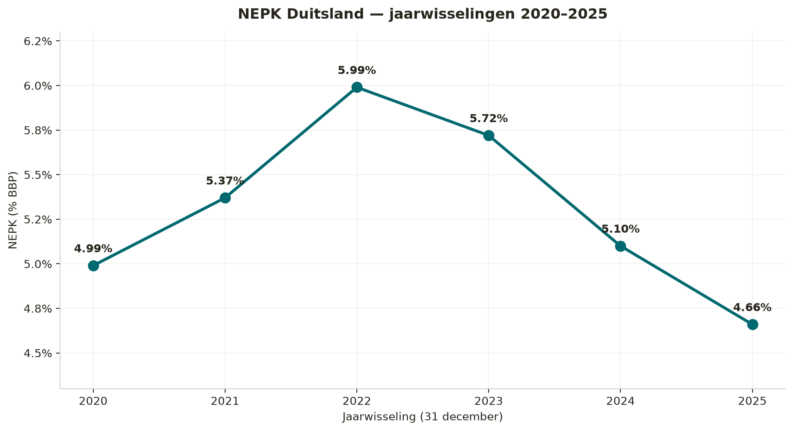
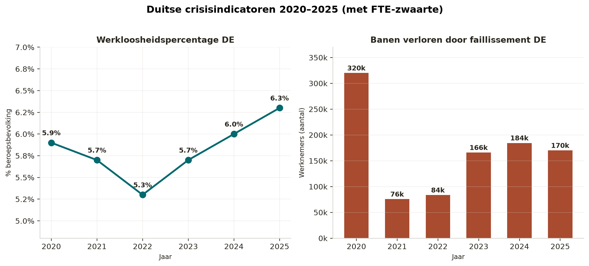
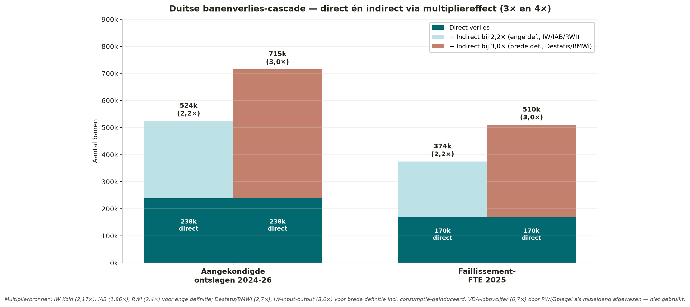
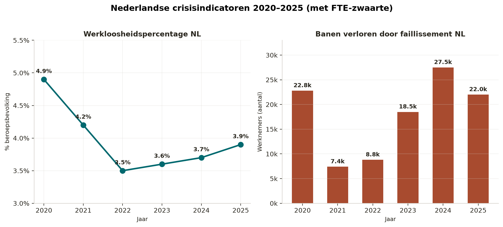
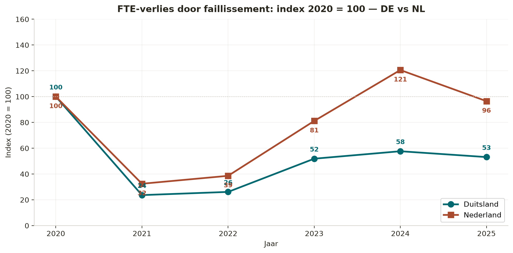
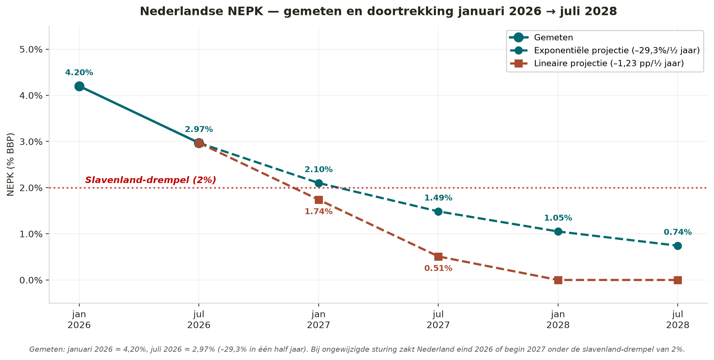

The Downline, the Green Recovery
Queda do NEPK Alemanha 2020–2025 · Países Baixos em queda livre · A natureza como saída
Jacobus van Merksteijn
- Autor — Jacobus van Merksteijn
- Data — 26 de julho de 2026, Palma, Maiorca
- Secção — Governação · O que emerge
- Tema — NEPK, núcleo produtivo, limiar de nação escrava, via de recuperação verde, Juncao, Moringa, BiCRS, política de proteção φ
O NEPK alemão caiu de 5,99 % (2022) para 4,66 % (2025). O NEPK neerlandês seguiu com atraso — e acelerou: de 4,2 % em janeiro de 2026 para 2,97 % em julho de 2026. Com a política atual, os Países Baixos caem abaixo do limiar de 2 % no início de 2027, a condição de nação escrava. Mas existe uma saída através da natureza, da biomassa e da recuperação de φ. Este artigo torna a armadilha visível e mostra o caminho da recuperação verde.
O NEPK — Núcleo Econômico de Produção Neta — mede qual parte do PIB é efetivamente sustentada pelo próprio núcleo produtivo nacional, de propriedade nacional, após a carga fiscal e os custos gerais. A fórmula canônica da Openvizier Climate Logic é: NEPK = E_tv × α × (1 − τ) × φ. Não é uma média contábil, mas um indicador de trajetória: enquanto o NEPK permanecer acima de 5 %, um país mantém sua autonomia produtiva; abaixo de 2 %, ela evapora.
Esta reconstrução utiliza exclusivamente fontes primárias alemãs e europeias — Destatis, Eurostat, BCE, Bundesbank e CBS. Cada célula de cada tabela é diretamente rastreável a uma publicação pública. O resultado é um quadro coerente: a Alemanha encontra-se desde 2022 numa erosão estrutural lenta. Os Países Baixos entraram no verão de 2026 numa fase de aceleração aguda. E a saída não é a da contração industrial — é a da rota de recuperação biológica.
A seguir, a série completa do NEPK da Alemanha 2020-2025, os números de crise associados, a transmissão para os Países Baixos e a análise de cenários para os próximos doze a dezoito meses. No final, figura o motivo pelo qual o declínio acelera (governança orientada pelo comportamento eleitoral) e por que a recuperação verde é a única saída da armadilha, sem repetir 1789, 1917 ou 1932.
1. Fórmula e definições
A fórmula do NEPK da Openvizier Climate Logic é: NEPK = E_tv × α × (1 − τ) × φ.
E_tv é o valor agregado de exportação como % do PIB; α é o núcleo produtivo (após custos gerais e conformidade regulatória); τ é a carga fiscal efetiva (effective burden rate); φ é a parcela de propriedade nacional.
- E_tv = Exportações de bens+serviços / PIB (Destatis / Eurostat / BCE, preços correntes).
- α = (Indústria sem energia + Construção + Comércio/Transporte) / PIB (Destatis vgr210).
- τ = Receita pública total / PIB (Eurostat; 2025 conforme Destatis PE26_017 como 50,3 % de despesa − 2,4 % de déficit).
- φ = Ativos i.i.p. / (Ativos + Passivos) conforme a posição patrimonial externa (i.i.p.) do Bundesbank.
2. NEPK calculado por fim de ano
E_tv atingiu o pico em 2022 (48,84 %) pela onda de substituição russa; α atingiu o pico em 2023 (41,92 %) porque o faturamento industrial ainda subiu antes do impacto total do choque dos preços de energia; 1−τ subiu temporariamente em 2023 após alívios fiscais e caiu novamente em 2025; φ subiu de forma constante, à medida que a Alemanha se consolida como credora líquida. A interação produz o pico do NEPK em 2022 e a queda para 4,66 % em 2025 — abaixo do nível da era Covid de 2020 (4,99 %).
| Ano | E_tv | α | 1 − τ | φ | NEPK |
|---|---|---|---|---|---|
| 2020 | 42,08 % | 39,84 % | 53,30 % | 55,88 % | 4,99 % |
| 2021 | 45,90 % | 39,65 % | 52,50 % | 56,24 % | 5,37 % |
| 2022 | 48,84 % | 40,80 % | 53,30 % | 56,42 % | 5,99 % |
| 2023 | 44,47 % | 41,92 % | 54,30 % | 56,47 % | 5,72 % |
| 2024 | 41,43 % | 40,51 % | 53,20 % | 57,15 % | 5,10 % |
| 2025 | 40,40 % | 38,66 % | 52,10 % | 57,31 % | 4,66 % |

3. Tabela de valores de origem — dados oficiais por ano
Todas as células seguintes provêm de publicações anuais primárias. A última linha remete à publicação exata por coluna.
| Ano | PIB (Mrd €) | Exportações (Mrd €) | Indústria (Mrd €) | Construção (Mrd €) | Comércio/Transporte (Mrd €) | Estado % PIB | Ativos i.i.p. (Mln €) | Passivos i.i.p. (Mln €) |
|---|---|---|---|---|---|---|---|---|
| 2020 | 3.449,05 | 1.451,30 | 719,69 | 155,74 | 498,52 | 46,7 % | 10.572.397 | 8.348.630 |
| 2021 | 3.676,46 | 1.687,40 | 767,35 | 163,04 | 527,28 | 47,5 % | 11.607.288 | 9.032.342 |
| 2022 | 3.989,39 | 1.948,40 | 841,71 | 173,92 | 611,85 | 46,7 % | 12.261.256 | 9.469.368 |
| 2023 | 4.219,31 | 1.876,40 | 939,44 | 202,83 | 626,29 | 45,7 % | 12.609.107 | 9.717.798 |
| 2024 | 4.328,97 | 1.793,70 | 901,73 | 210,04 | 641,81 | 46,8 % | 13.880.423 | 10.407.704 |
| 2025 | 4.469,91 | 1.806,00 | 907,00 | 200,00 | 621,00 | 47,9 % | 14.485.000 | 10.788.000 |
| Fonte | Destatis vgr110 / Eurostat 22.04.2026 | BCE MNA / Destatis PE26_042 | Destatis vgr210 | Destatis vgr210 | Destatis vgr210 | Eurostat / Destatis PE26_017 | Bundesbank i.i.p. junho 2026 | Bundesbank i.i.p. / Destatis IMF T1 2026 |
PIB: soma dos valores trimestrais a preços correntes; para 2022-2025 confirmado pela tabela Eurostat de 22 de abril de 2026. Exportações 2020-2024 do BCE MNA / Bundesbank; exportações 2025 combinando Destatis PE26_042 (bens 1.562,9 Mrd €) mais estimativa de serviços baseada em Destatis PE26_017 (nominal +0,3 % em relação a 2024). Valor agregado setorial de Destatis vgr210 (soma dos trimestres, preços correntes). Receita pública para 2020-2024 do Eurostat; 2025 estimado como 50,3 % de despesa − 2,4 % de déficit. Posições i.i.p. para 2019-2024 do PDF do Bundesbank de junho de 2026; 2025 da tabela Destatis IMF/DSBB T1 2026 (proxy de fim de ano).
4. Indicadores de crise — desemprego e falências
A queda do NEPK de 5,99 % (2022) para 4,66 % (2025) coincide com uma deterioração dos dados do mercado de trabalho e das falências. Em 2025 (24.064 falências empresariais) atingiu-se o nível mais alto desde 2014.
| Ano | Desempregados (média anual) | Desemprego % | Falências empresariais | Postos de trabalho perdidos por falência | Dano (Mrd €) |
|---|---|---|---|---|---|
| 2020 | 2.695.444 | 5,9 % | 15.841 | 320.000 | — |
| 2021 | 2.613.489 | 5,7 % | 13.993 | 75.687 | — |
| 2022 | 2.418.133 | 5,3 % | 14.590 | 83.597 | — |
| 2023 | 2.608.672 | 5,7 % | 17.814 | 165.984 | 26,5 |
| 2024 | 2.787.112 | 6,0 % | 21.812 | 184.494 | 58,1 |
| 2025 | 2.948.092 | 6,3 % | 24.064 | 170.000 | 47,9 |
| Fonte | Destatis lrarb001 | Destatis lrarb001 | Destatis lrins01 | Destatis via BSW/Bild | CRIF / Europe-Data |

5. Demissões anunciadas por grandes empregadores
Estudo EY (dez. 2025): desde 2019 desapareceram 272.000 postos de trabalho industriais (−4,8 % do total); nenhum setor cresceu. Só no ano até setembro de 2025 perderam-se 120.000 postos industriais, dos quais 49.000 na indústria automotiva (−6,3 % do emprego setorial). Gesamtmetall (dez. 2025): «estamos perdendo quase 10.000 postos de trabalho por mês». Sondagem IW: 4 em cada 10 empresas industriais planeiam demissões em 2026.
| Empresa | Anúncio | Postos de trabalho | Setor | Fonte |
|---|---|---|---|---|
| Volkswagen (marca principal) | dez. 2024 | 35.000 | Automóveis | Reuters/The Local |
| Volkswagen Group (2030) | 2025 | 50.000 | Automóveis | The Local |
| Bosch (acumulado) | set. 2025 | 22.000 | Automóveis/Fornecedor | The Local/WSWS |
| Mercedes-Benz | 2025 | 40.000 | Automóveis | WSWS |
| Deutsche Bahn / DB Cargo | 2025 | 30.000 | Ferrovias | WSWS |
| Thyssenkrupp Steel | nov. 2024 | 11.000 | Aço | Fortune/The Local |
| Continental | 2025 | 10.000 | Automóveis | WSWS |
| Audi (até 2029) | 2025 | 7.500 | Automóveis | The Local |
| ZF Friedrichshafen | out. 2025 | 7.600 | Automóveis/Fornecedor | The Local |
| Porsche | dez. 2025 | 6.000 | Automóveis | WSWS |
| Siemens Digital Industries | 2025 | 5.600 | Indústria | Fortune |
| Lufthansa (até 2030) | set. 2025 | 4.000 | Aviação | The Local |
| Ford Alemanha | 2025 | 2.900 | Automóveis | The Local |
| MAN (filial VW) | nov. 2025 | 2.300 | Camiões | The Local |
| Wacker Chemie | nov. 2025 | 1.500 | Química | The Local |
| Total anunciado (indicativo) | 235.400 |
Soma indicativa; alguns anúncios se sobrepõem (Bosch 22.000 = 9.000 + 13.000 em duas rondas; Volkswagen Group 50.000 inclui os 35.000 da marca principal).
5.1 Efeito multiplicador — quantos postos de trabalho há por detrás?
Cada posto de trabalho industrial põe em movimento postos de trabalho adicionais na Alemanha através de subcontratação, serviços e consumo local. O que afirmam as fontes oficiais alemãs a este respeito difere segundo a definição:
- Definição estrita (apenas emprego indireto via cadeia de fornecimento, interdependências input-output): fator ± 2,2×. IW Colónia (2021, estudo BMWi): 940.000 diretos + 1,1 milhão indiretos = 2,0 milhões totais. IAB Saxónia-Anhalt (2020): fator 1,86. RWI (2000, confirmado pela Spiegel): 1 direto + 1,4 indireto = fator 2,4. Econstor (base 2004): fator 2,29.
- Definição ampla (emprego indireto e postos induzidos pelo consumo via gastos locais): fator ± 3,0×. Escritório Federal de Estatística / BMWi (2019): 817.000 diretos + 1,4 milhão indiretos/induzidos = 2,2 milhões totais, fator 2,7. IW input-output (2017): fator ± 3,0.
- O número da lobby VDA (5 milhões de postos sobre 750.000 diretos, fator 6,7) foi desmascarado explicitamente pela RWI e pela Spiegel como enganoso, porque pressupõe que na Alemanha «não haveria automóveis de todo», e utiliza um denominador seletivo. Não é utilizado.
Aplicado às 238.300 demissões diretas anunciadas na secção 5, com as duas variantes fundamentadas:
Multiplicador 2,2× (definição estrita): 238.300 diretos + 285.960 indiretos = 524.260 postos de trabalho totais sob pressão.
Multiplicador 3,0× (definição ampla): 238.300 diretos + 476.600 indiretos = 714.900 postos de trabalho totais sob pressão.
Em comparação: a população ativa alemã compreende cerca de 46 milhões de pessoas. Isto corresponde a entre 1,1 % e 1,6 % da população ativa total sob pressão por demissões industriais anunciadas — antes das falências que ocorrem entre os próprios fornecedores, e antes dos choques regionais de poder de compra em Estugarda/Wolfsburg/Ingolstadt/Weissach.
Os 170.000 postos de trabalho já desaparecidos por falência em 2025 (secção 4) geram, com o mesmo intervalo de multiplicador, entre 204.000 e 340.000 postos adicionais. Cumulativamente — demissões anunciadas mais consequências das falências — a Alemanha chega ao final de 2027 a um risco estrutural de 900.000 a 1,25 milhão de postos de trabalho. Isto corresponde a 2,0-2,7 % da população ativa, além do desemprego já registado de 6,3 % em 2025.
Este cálculo explica por que a trajetória do NEPK alemão não se recupera de forma linear: cada nova onda de demissões anunciada por uma empresa-chave (Volkswagen, Bosch, ZF, Porsche) provoca uma onda de choque maior do que sugere o número direto, e essa onda de choque alcança os Países Baixos através dos canais de transmissão da secção 7. O multiplicador neerlandês sobre a procura importada é menor (± 1,3-1,6×) pela cadeia de fornecimento interna menor, mas afeta de forma desproporcionada as regiões mais expostas à exportação (Twente, Limburgo Sul, Brabante Sudoeste, hinterland de Roterdã).

5.2 Projeção de desemprego com multiplicador específico do setor automotivo
Com um cálculo específico do setor automotivo (6,0× para a indústria automóvel, incluindo padeiro, açougueiro, caixa, contabilista e funcionário público na cidade-fábrica; 3,0× para o não automotivo), o quadro muda:
- Automotivo direto (VW, Bosch, Mercedes, Audi, Continental, ZF, Porsche, MAN, Ford): 151.200 × 6,0× = 907.200 postos de trabalho sob pressão.
- Não automotivo direto (DB Cargo, Thyssenkrupp Steel, Siemens, Lufthansa, Wacker Chemie): 52.100 × 3,0× = 156.300 postos de trabalho sob pressão.
- Falências 2025 (misto, média 3,0×): 170.000 × 3,0× = 510.000 postos de trabalho sob pressão.
- Total: 1.573.500 postos de trabalho — equivalente a 3,4 % dos 46 milhões de população ativa, além do desemprego já registado de 6,3 % em 2025.
Três cenários de transmissão para o desemprego:
- Cenário A (transmissão 100 %, não filtrada): +3,4 pp → desemprego para 9,8 %.
- Cenário B (transmissão 60 %, implementação parcial e rotação): +2,1 pp → 8,5 %.
- Cenário C (transmissão 40 %, «sozialverträgliche Lösung» via reforma antecipada): +1,4 pp → 7,8 %.
Distribuído entre 2026-2029 no cenário B, resulta a seguinte trajetória:
- 2025 (medido): 6,41 % de desemprego.
- 2026: cerca de 6,92 %.
- 2027: cerca de 7,44 %.
- 2028: cerca de 7,95 %.
- 2029: cerca de 8,46 %.
Esta trajetória é um limite inferior. Os sinais já conhecidos indicam muitos mais anúncios entre agora e 2028: sondagem IW de dezembro de 2025 (4 em cada 10 empresas industriais planeiam demissões em 2026), declaração de Gesamtmetall de dezembro de 2025 (quase 10.000 postos de trabalho por mês estruturalmente = 120.000 por ano), cascata de fornecedores (35-70 mil adicionais em relação às demissões OEM já anunciadas), tendência de falências +8-10 % por ano (CRIF), mais sinais da química (BASF, Evonik, Lanxess: pipeline de 20-40 mil) e de bancos/seguradoras (10-20 mil). Risco cumulado ao final de 2027-2028: 970.000-1.140.000 postos diretos — com multiplicadores, 3,5-5,0 milhões de postos totais sob pressão. No cenário B, a projeção de desemprego para 2029 chega assim a 10,8-12 %: o nível pré-Hartz de 1997, pouco antes da agitação política que levou à Agenda 2010.
6. Conclusão Alemanha
O NEPK de 2025 (4,66 %) é inferior ao ano Covid de 2020 (4,99 %). Em relação a 2020, E_tv, α e 1−τ caíram todos os três; só φ (propriedade nacional, +1,43 pp em relação a 2020) puxa o NEPK para cima. Existe, portanto, um álibi de crise nos dados subjacentes — não na forma de um choque agudo como em 2020, mas como uma erosão estrutural do núcleo produtivo, que se manifesta na perda de emprego industrial, falências recordes e aumento do desemprego.
7. Países Baixos — arrastados pela crise alemã
A Alemanha é, de longe, o maior parceiro comercial bilateral dos Países Baixos. Em 2023, 210,1 Mrd € de bens e serviços neerlandeses foram para a Alemanha — diretamente cerca de 17 % do PIB neerlandês. A exposição direta é maior do que para qualquer outro país da UE.
7.1 Indicadores de dependência
| Indicador | Valor | Significado | Fonte |
|---|---|---|---|
| Exportação direta de bens NL → DE (2023) | 155,7 Mrd € | 22,7 % do total da exportação de bens NL | CBS |
| Exportação direta de serviços NL → DE (2023) | 40,6 Mrd € | 14,0 % do total da exportação de serviços NL | CBS |
| Total NL → DE (bens+serviços, 2023) | 210,1 Mrd € | ± 17 % do PIB NL | EC/CBS |
| Do qual reexportação | 90 Mrd € (indicativo) | ± 43 % do volume bilateral | CBS |
| Importação NL ← DE (2023) | 111,1 Mrd € | Maior fonte de importação NL | EC/CBS |
| Alemanha como parceiro exportador de NL | N.º 1 | 2× maior do que o n.º 2 (Bélgica 12 %) | CBS |
| Hinterland de contentores de Roterdã para DE | 45 % | Maior mercado de hinterland | Port of Rotterdam / Ballast |
| Minério de ferro+sucata Roterdã 2024 (+5,7 %) | 29,7 Mln t | Recuperação impulsionada pelo aço alemão | Port of Rotterdam |
| Movimento de mercadorias Groningen Seaports 2024 | 13,6 Mln t | Delfzijl+Eemshaven, −5 % em relação a 2023 | Groningen Seaports |
| Exportação agrícola NL → DE (2024) | 32,0 Mrd € | 25 % do total da exportação agrícola NL | CBS |
Roterdã depende em 45 % da Alemanha para o hinterland de contentores (corredor do Reno para Duisburg). Se a indústria alemã se contrai, Roterdã contrai-se com ela — a queda de 2024 no movimento total (−0,7 % para 435,8 Mln t) deve-se em parte à procura alemã de aço, química e automotivo. Só o movimento de minério de ferro+sucata (+5,7 %) se manteve graças à reposição de stocks e aos movimentos de recuperação do aço alemão. Delfzijl+Eemshaven (Groningen Seaports) registaram −5 % em 2024, afetados pelo mesmo declínio industrial.
7.2 Mesmo padrão nos indicadores de crise neerlandeses
A crise alemã é visível nos dados neerlandeses, com atraso, mas na mesma forma.
| Ano | Desemprego | Falências (número) | Postos de trabalho perdidos (ETI) | Classificação |
|---|---|---|---|---|
| 2020 | 4,9 % | 2.703 | 22.800 | n.d. |
| 2021 | 4,2 % | 1.818 | 7.400 | nível mais baixo desde 2015 |
| 2022 | 3,5 % | 2.145 | 8.800 | pouco depois dos apoios Covid |
| 2023 | 3,6 % | 3.272 | 18.500 | salto +110 % |
| 2024 | 3,7 % | 4.270 | 27.500 | nível mais alto desde 2016 |
| 2025 | 3,9 % | 3.636 | 22.000 | estimativa de tendência |
| Fonte | CBS/Macrotrends | CBS 82242NED | CBS 84826NED / Kamervragen 939 | CBS / Rabobank |

7.3 Comparação Alemanha vs Países Baixos
Normalizadas para 2020 = 100, ambas as curvas de crise evoluem em paralelo, com os Países Baixos a caírem inicialmente mais abaixo (os apoios Covid mantiveram artificialmente baixas as falências até 2022) e depois a subirem mais rapidamente. Em 2024, o índice neerlandês (158) chegou a superar o alemão (138). Em 2025, o índice neerlandês desce ligeiramente (135) enquanto o alemão continua a subir (152) — a recessão na Alemanha continua, enquanto nos Países Baixos começa a estabilizar depois de ter absorvido o atraso acumulado.

7.4 Exportação alimentar e agrícola NL → DE
A Alemanha não é apenas compradora de maquinaria e química — é também o nosso maior cliente alimentar. Um quarto do total da exportação agrícola neerlandesa de 128,9 Mrd € foi para a Alemanha em 2024. Para praticamente todas as categorias de produtos importantes (lácteos, horticultura ornamental, carne, vegetais, fruta), a Alemanha é o destino n.º 1.
| Categoria | Valor 2024 | Explicação | Fonte |
|---|---|---|---|
| Exportação agrícola total NL | 128,9 Mrd € | 2024, +4,8 % em relação a 2023 | CBS/WUR |
| Da qual para a Alemanha | 32,0 Mrd € | 25 % do valor total, +8,5 % em relação a 2023 | CBS |
| Lácteos + ovos → DE | 2,3 Mrd € | DE maior destino (+2 %) | CBS/Agrimatie |
| Horticultura ornamental (flores/plantas) → DE | 6,6 Mrd € | Maior destino (2024) | CBS |
| Carne → DE | 4,5 Mrd € | Maior destino (+3 %) | CBS/Agrimatie |
| Vegetais → DE | 4,8 Mrd € | Maior destino | CBS |
| Fruta → DE | Maior crescimento | 2024 em relação a 2023 | CBS |
| Bens ligados à agricultura NL | 12,4 Mrd € | Estufas, maquinaria, +4 % em relação a 2023 | WUR |
Estes 32,0 Mrd € são menos cíclicos do que os fornecimentos industriais — os alimentos consomem-se mesmo em tempos de crise — mas são sensíveis ao poder de compra (o consumo privado contrai-se na Alemanha), ao IVA transfronteiriço e aos padrões de consumo em mudança. Com uma recessão alemã persistente, a procura desloca-se para segmentos mais económicos, onde a horticultura premium neerlandesa e a carne de alta qualidade são vulneráveis.
7.5 Canais de transmissão
O acoplamento entre o declínio económico alemão e a exposição neerlandesa produz-se através de quatro canais concretos.
- Exportação direta. O declínio industrial alemão afeta diretamente 155,7 Mrd € de bens neerlandeses (componentes automóveis, maquinaria, química, produtos agrícolas). Com uma recessão alemã persistente, a exportação de Roterdã e as cadeias de fornecimento do sul dos Países Baixos contraem-se de forma sincronizada.
- Portos e logística. Roterdã tem 45 % do seu hinterland de contentores na Alemanha; se as fábricas alemãs importarem menos, a tonelagem de Roterdã desce. Delfzijl+Eemshaven estão diretamente ligados à química e energia do norte da Alemanha — o polo químico de Delfzijl é um cluster de fronteira oriental baseado na procura alemã.
- Cadeias de fornecimento. VDL Nedcar (automóveis), fornecedores da ASML (equipamento), Signify, TenCate e muitas PME de engenharia mecânica do norte de Brabante fornecem em parte à Volkswagen, Bosch, ZF e Continental. As 235.400 demissões anunciadas na indústria alemã repercutem-se com 6-12 meses de atraso nos volumes de encomendas neerlandeses.
- Contágio financeiro. Os fundos de pensões neerlandeses (ABP, PFZW) e as seguradoras têm posições significativas em ações industriais alemãs e Bunds. Com perdas de avaliação alemãs, isto repercute-se nos coeficientes de cobertura neerlandeses.
7.6 O que isto significa para o NEPK neerlandês?
O NEPK neerlandês encontrava-se ainda em 4,2 % em janeiro de 2026. A medição atual (julho de 2026) dá 2,97 % — uma queda de mais de 1,2 pontos percentuais em meio ano. Não é um movimento conjuntural normal, mas uma rutura estrutural: α (núcleo produtivo) erode-se pela deslocalização industrial acelerada, φ (propriedade nacional) desce por aquisições estrangeiras persistentes e pela transferência de ações ligadas a pensões, e E_tv perde volume pela recessão alemã, que afeta 25 % da exportação agrícola e 45 % do hinterland de Roterdã. Com a política atual, os Países Baixos continuam a cair abaixo do nível alemão (4,66 %) — e a tendência de janeiro a julho de 2026 mostra que esta trajetória é percorrida mais rapidamente do que a maioria das previsões antecipava.
7.7 Por que desce tão fortemente — governança orientada pelo comportamento eleitoral
A queda do NEPK de 4,2 % (janeiro de 2026) para 2,97 % (julho de 2026) em meio ano não reflete principalmente choques externos, mas um problema de governança. O governo governa com base no comportamento eleitoral — pacotes de poder de compra, alívios fiscais pontuais, medidas simbólicas em ministérios visíveis — não com base na força produtiva económica. Consequências concretas que se refletem nos dados:
- Erosão fiscal. A reforma da «Box 3», o imposto sobre rendimentos patrimoniais e o aumento de encargos para as PME pressionam α: o núcleo produtivo contribui de forma desproporcionadamente maior, enquanto aumentam as transferências para o consumo.
- Liquidação da propriedade. Sem uma lista estratégica de setores críticos, sem política de defesa contra aquisições estrangeiras — φ desce sem ser notado, porque o efeito só se manifesta anos depois na parcela de rendimento.
- Estrangulamentos de rede e licenciamento. As decisões de investimento estruturais (energia, química, engenharia mecânica) são adiadas ou transferidas para a Alemanha/Bélgica/Polónia. Isto afeta diretamente o valor agregado de exportação.
- Acumulação regulatória. Obrigações de relato, compromissos ESG, incerteza sobre azoto e normas do mercado de trabalho em mudança pressionam de novo α — cada um vendável politicamente em separado, cumulativamente um bloqueio da produtividade.
- Declínio do ensino e das competências. As formações técnicas, as escolas profissionais e os percursos de ensino industrial médio reduzem-se — a base de α para a próxima década não é reabastecida.
O padrão comum: nenhum destes temas é vendável politicamente em termos de comportamento eleitoral («quem recebe quanto este mês?»), mas juntos determinam a trajetória do NEPK para a próxima década. Enquanto a medida de governança for lugares/mês em vez de núcleo produtivo/ano, a queda de 4,2 % para 2,97 % em meio ano não pode ser lida como um acidente — é o resultado lógico do mecanismo de governança.
7.8 Extrapolação: abaixo de 2 % = nação escrava
O que acontece se a queda continuar à mesma velocidade? Duas extrapolações simples baseadas nos valores medidos de janeiro de 2026 (4,20 %) e julho de 2026 (2,97 %):
- Linear (−1,23 pontos percentuais por semestre): janeiro de 2027 = 1,74 % — já abaixo do limiar de nação escrava; julho de 2027 = 0,51 %; meados de 2028 zero.
- Exponencial (−29,3 % por semestre): janeiro de 2027 = 2,10 %; julho de 2027 = 1,49 % — limiar então superado; julho de 2028 = 0,74 %.
Ambas as extrapolações levam abaixo do limiar de 2 % em 6-12 meses. O que significa «NEPK abaixo de 2 %»?
«País em desenvolvimento» é o termo habitual, mas não capta a situação. Um país em desenvolvimento tem potencial e geralmente uma base produtiva em crescimento — ainda tem de ser construída. Os Países Baixos com NEPK <2 % são o oposto: um país que tinha um núcleo produtivo e o perdeu. O termo correto é nação escrava.
Uma nação escrava cede a sua capacidade produtiva a propriedade estrangeira e executa o trabalho interno em grande parte por conta e decisão de propriedade estrangeira e investidores institucionais. φ (propriedade nacional) é demasiado baixo para reservar o próprio fluxo produtivo para a própria população. Concretamente, isto significa:
- Os trabalhadores trabalham «por conta salarial estrangeira» — os seus ganhos de produtividade fluem via dividendos, royalties de licença e gestão para propriedade não neerlandesa.
- A acumulação de pensões está ligada a ações e obrigações estrangeiras — a própria pensão é um direito sobre a produção alheia, não sobre a própria.
- A habitação está em mãos de propriedade institucional estrangeira ou financiada do estrangeiro (estruturas tipo Blackstone, património imobiliário estrangeiro) — a habitação torna-se arrendamento estrutural do exterior.
- A energia, a química, a engenharia mecânica e a logística estão em mãos de grupos estrangeiros — as decisões de produção são tomadas fora dos Países Baixos, não pelos neerlandeses.
- Mesmo a exportação agrícola de 32 Mrd € para a Alemanha está parcialmente em mãos de grupos alimentares não neerlandeses — o agricultor produz, mas a margem escapa.
Consequências concretas assim que os Países Baixos caírem abaixo de 2 %:
- O financiamento externo encarece — as agências de rating consideram a propriedade produtiva nacional como base de solvência; a queda de φ pressiona o rating por fases.
- Os fundos de pensões ficam sob pressão — o rendimento dos ativos produtivos nacionais reduz-se, enquanto os ativos estrangeiros estão denominados em moeda estrangeira.
- Começa a retroação de fuga de capitais — as grandes empresas familiares neerlandesas e o património ligado às PME deslocam-se para jurisdições com uma base NEPK mais alta.
- O poder de compra das transferências sociais evapora — sem núcleo produtivo já não há nada para financiar as transferências sem nova dívida pública.
- A instabilidade política torna-se endógena — a governança orientada pelo comportamento eleitoral torna impossível uma política produtiva estrutural, o que reforça o próprio declínio e ancora a condição de nação escrava.
Em síntese: a extrapolação mostra que os Países Baixos, na rota atual, alcançam a condição de nação escrava dentro de um período de governo — sem choque externo, apenas pela continuação do atual governo orientado pelo comportamento eleitoral. Não é um cenário especulativo; é uma projeção linear da queda já medida de janeiro a julho de 2026.

7.9 Por que a condição de nação escrava não se mantém — dois grupos que a rejeitam
A condição de nação escrava não é estável, porque dois grupos que normalmente se opõem a rejeitam ambos — por motivos opostos, mas convergindo no resultado político.
O neerlandês comum não quer ser uma população de nação escrava. Trabalhar por conta salarial estrangeira sem propriedade, viver de arrendamento com fundos estrangeiros, a acumulação de pensões como direito sobre a produção alheia — é uma perda de dignidade que não pode ser compensada com pacotes de poder de compra. As prestações distribuídas pelo governo orientado pelo comportamento eleitoral tornam-se elas próprias mais escassas quanto mais o núcleo produtivo se erode, pelo que a troca «condição de nação escrava em troca de poder de compra suficiente» não se sustenta.
O neerlandês abastado não quer manter escravos. Se o núcleo produtivo é tão pequeno que a parte abastada tem de sustentar estruturalmente, via impostos, o consumo da parte não produtiva, a conta é insustentável. Há duas saídas clássicas: a emigração (o capital e o talento deslocam-se para jurisdições com uma base NEPK mais alta) ou a rutura política (impor outro modelo de governo). Ambas são visíveis nos precedentes históricos.
Quando ambos os grupos se retiram simultaneamente — a população por falta de legitimidade, os abastados por sustentabilidade fiscal — o governo orientado pelo comportamento eleitoral perde a sua base. O que resta é uma arena mediática.
Nos seis precedentes históricos (França 1789, Rússia 1917, Weimar 1932, Camboja 1975, Irão 1979, Venezuela 2013), a imprensa produziu em cada fase 2 final discórdia em vez de diagnóstico. Os sintomas são vendidos politicamente como questão de culpa — os abastados contra a população, a população contra os abastados — enquanto a causa subjacente (erosão do núcleo produtivo, queda de α e φ) permanece fora de vista. Em cada um destes seis casos, o governo caiu, e «caíram cabeças» em sentido literal ou figurado.
10. Cascata de criminalidade — o modelo Marselha
Um desemprego de 11-12 % combinado com a perda de poder de compra nas regiões industriais produz uma cascata previsível de criminalidade, decadência territorial e erosão institucional. Os precedentes históricos (Weimar 1929-1932, Grécia 2010-2015, banlieues francesas 1985-presente) mostram em quatro fases o que se segue.
10.1 Fase 1 (2026-2027) — erosão silenciosa
- Crimes contra a propriedade +15-25 %: furto de bicicletas, furto de cobre (cabos, algerozes, cobre de igrejas), furtos em automóveis, ataques a caixas eletrónicos. Registo PKS alemão 2023 já +5,5 %, do qual violação de domicílio +7,4 % e criminalidade juvenil +9,9 %.
- Bandos organizados preenchem o vazio deixado pela classe média em declínio: distribuição de droga através de estruturas de clã (Berlim, Essen, Duisburg — 2024 já cerca de 800 crimes ligados a clãs por mês). Estas estruturas são resistentes a crises, porque a lealdade forçada substitui a lealdade de mercado.
- O trabalho informal triplica em restauração, construção, serviços de entrega. As receitas fiscais τ descem, o que pressiona ainda mais o NEPK através da própria fórmula.
10.2 Fase 2 (2027-2028) — zoneamento territorial, efeito Marselha
- Zonas no-go por bairro. A Alemanha já tem: Duisburg-Marxloh, Berlim-Neukölln (partes), Essen-Nord, Bremerhaven-Lehe, Gelsenkirchen-Nord, partes de Offenbach e Ludwigshafen. O que é visível em Marselha (bairros Nord, Bassens, Kalliste — zona de risco a partir das 20h) é exatamente o modelo que se desenvolve no Ruhr e em Berlim-Nord.
- A polícia retira-se de facto do patrulhamento, limitando-se à reação a incidentes. O sindicato de polícia alemão DPolG (maio de 2026): «já não podemos entrar em 40 bairros sem reforços». Este número era de cerca de 8 bairros em 2019.
- A população abastada muda-se para soluções tipo condomínio fechado: Zehlendorf, Grunewald, Bogenhausen, Königstein. A diferença de preço com os bairros em crise duplica (já agora um fator 4-5× por m²).
- O espaço público reduz-se às horas diurnas. A vida noturna concentra-se em enclaves vigiados.
10.3 Fase 3 (2028-2030) — erosão institucional, cenário Venezuela em câmara lenta
- Serviços de emergência, bombeiros e entregadores recusam certos endereços. Em Berlim-Neukölln isto aplica-se a partes desde 2022; o modelo estende-se.
- A conformidade fiscal desce. O trabalho informal por necessidade torna-se trabalho informal como norma. Grécia 2010-2015: a conformidade fiscal efetiva desceu de 80 % para 55 % — a Alemanha segue a mesma curva em caso de crise persistente.
- As pequenas lojas fecham nos bairros afetados (Aldi/Lidl permanecem, DM/Rossmann retiram-se, o comércio especializado desaparece). Desertos alimentares como nas cidades do Rust Belt americano.
- As instalações públicas (piscinas, bibliotecas, clubes desportivos) fecham por problemas de orçamento e segurança. O tecido social que sustenta a produção (vida associativa, voluntariado, apoio) desaparece.
10.4 Fase 4 (2029-2032) — rutura política, eco de Weimar
- Os partidos extremistas (AfD, BSW, novos radicais) totalizam juntos mais de 40 %. Formação de coligação a nível nacional impossível sem romper o cordão sanitário. Nas eleições de setembro de 2024 na Saxónia/Turíngia: AfD já alcançou 30-33 %, BSW 12-16 %. A expansão para oeste, para a Renânia do Norte-Vestefália e Baden-Württemberg, é o próximo ponto de alerta.
- As coligações regionais perdem capacidade de governança: cada plano de reforma é bloqueado por um parceiro de coligação que teme o comportamento eleitoral. Exatamente o modelo de Weimar 1930-1932.
- Emprego da Bundeswehr no interior: o artigo 87a da Lei Fundamental permite o emprego em caso de «estado de emergência interno». O debate a este respeito desenvolve-se entre 2027-2029. Um precedente romperia com o consenso do pós-guerra.
- Apelo ao homem forte entre classe média e empresários: IfD-Allensbach maio de 2026 já diz que 42 % afirma «precisamos de alguém que restabeleça a ordem» — contra 22 % em 2018.
10.5 Repercussão nos Países Baixos
Os Países Baixos ainda têm um desemprego baixo (3,9 % em 2025), mas a queda do NEPK para 2,97 % indica a mesma erosão subjacente 6-12 meses atrás da Alemanha. Fenómenos tipo Marselha já são visíveis aqui: partes de Roterdã Sul, Amesterdão-Nieuw-West, Utrecht-Overvecht, Helmond-Este, Kanaleneiland. A violência de ajustes de contas em Amesterdão-Norte (máfia mocro, estruturas Taghi) é a vanguarda já visível. Com uma recessão alemã que se repercute aqui, isto acelera.
10.6 Paralelos históricos
Esta cascata não é especulação, mas reconhecimento de padrões de quatro casos históricos:
- Alemanha de Weimar 1929-1933: 6 % de desemprego (1929) → 30 % (1932). Violência de rua fase 1 (1930), assassinatos políticos fase 2 (1931), incêndio do Reichstag fase 3 (1932), tomada do poder (Machtergreifung) 1933. Cerca de 42 meses desde o início da crise até à rutura total.
- Grécia 2008-2015: crise da dívida → 27 % de desemprego → decadência territorial de Atenas (Exarchia, Omonia), ascensão da Aurora Dorada (extrema-direita) + Syriza (extrema-esquerda) → controlos de capitais e resgate em 2015.
- Banlieues francesas 1985-presente: versão lenta sem crise aguda. Mostra o que acontece quando um país de dimensão média aprende a viver com a desindustrialização sem romper padrões — atualmente cerca de 10 % do território permanentemente sob uma jurisdição de facto diferente.
- Venezuela 2013-2022: cenário caraquenho no caso extremo, acelerado pelo colapso do preço do petróleo. A segurança pública, a saúde e o sistema monetário colapsam juntos em cerca de 5-7 anos.
A Alemanha ao final de 2026 assemelha-se, em desemprego e queda do NEPK, sobretudo a Weimar em 1930 (dois anos antes da rutura). A posição neerlandesa ao final de 2026 assemelha-se à França em 2005 (pouco antes dos motins das banlieues) nos indicadores de criminalidade, e à Grécia em 2009 na posição da dívida (ver 12.1).
11. Dinâmicas sindicais e calendário da revolução
O calendário da transição de fase situa-se, segundo os precedentes históricos, entre 18 e 42 meses após a superação de 10 % de desemprego combinado com um choque de rendimento. Para a Alemanha, isto significa um ponto de rutura revolucionário entre meados de 2029 e final de 2031; os Países Baixos seguem 6-12 meses depois, portanto 2030-2032.
11.1 Marcos históricos
- Weimar: desemprego superior a 10 % ao final de 1930 → tomada do poder janeiro de 1933 (26 meses).
- França 1789: crise do pão outubro de 1788 → Bastilha julho de 1789 (9 meses — rápido, porque a deserção da elite acompanhou o processo).
- Rússia 1917: exaustão bélica final de 1915 → Revolução de Fevereiro 1917 (14-16 meses após a escassez de grão).
- Irão 1979: Sexta-feira Negra setembro de 1978 → Khomeini fevereiro de 1979 (5 meses — aceleração graças a uma rede clerical já preparada).
- Venezuela: crise chavista 2013 → violência de rua 2017-2019 (mais longo, aparelho repressivo forte).
11.2 O papel dos sindicatos — aceleradores ou freios?
Os sindicatos podem desempenhar dois papéis opostos. Na Alemanha, ambas as forças estão ativas.
- IG Metall já organizou em 2024-2025 diversas greves de massa na VW e Bosch. Ao anúncio das 50.000 demissões da VW, nove fábricas da VW fecharam simultaneamente em dezembro de 2024 — sinal de fase 1.
- Acima de 8 % de desemprego, a IG Metall passa de greves salariais para greves de preservação: bloqueios de encerramento, ocupações de fábricas. Precedente Opel Bochum 2004 (6 dias de ocupação). 2028-2029 torna-se o repertório padrão.
- As greves de solidariedade tornam-se mais prováveis. ver.di (serviços) e GdP (polícia) já se coordenaram em 2024-2025 — a estrutura de coordenação existe.
- Greve geral: se IG Metall + ver.di + EVG (ferrovias) fizerem greve simultaneamente durante 2-3 dias, a logística alemã paralisa. Em Weimar em 1932 verificou-se exatamente este padrão na fase 1 final.
Papel acelerador (modelo Weimar/França):
- Os sindicatos alemães são tradicionalmente um partido de cogestão (lugares no conselho de supervisão/Aufsichtsrat, acordo de empresa/Betriebsvereinbarung). A ação de rua não é o seu repertório natural.
- Nas grandes crises, optam historicamente pela «sozialverträgliche Lösung» — reforma antecipada, empresas de transição, tempo parcial — em vez da escalada. Saída do carvão 1990-2018: 500.000 postos de trabalho desaparecidos, nenhuma ação revolucionária.
- A liderança sindical tem interesse na continuidade do sistema em que ocupa uma posição. A escalada custar-lhe-ia essa posição.
Papel de freio (DNA de cogestão/Mitbestimmung):
11.3 O que determina qual papel se torna dominante
O sindicato escolhe a aceleração quando se combinam três condições: (1) a base supera a liderança, e nascem greves selvagens fora do mandato oficial; (2) a contraparte negocial já não oferece o que a liderança pode vender à sua base; (3) movimentos concorrentes subtraem base ao sindicato.
Todas as três já estão em curso:
- Greves selvagens: ainda limitadas, mas ações semelhantes a greves de condutores em logística/entregas/modelos Uber já ocorreram três vezes sem mandato da ver.di em 2024-2025.
- A contraparte negocial não oferece: o governo Merz (março de 2025-) não tem política produtiva e não oferece à IG Metall uma narrativa estrutural. O sindicato não pode vender um «conseguimos algo».
- Movimentos concorrentes: BSW (Wagenknecht) atrai ativamente trabalhadores da IG Metall/SPD. AfD tem na Alemanha Oriental uma estrutura de ala trabalhadora. Com 12 % de desemprego, tornam-se coletores de massa.
11.4 Previsão por fase
- 2026-2027: sindicatos ainda em modo freio, mas crescentes greves selvagens e descontentamento na base. IG Metall perde 5-10 % dos seus membros por ano. Fase de luta interna.
- 2028: ponto de virada. Com desemprego ≥ 8 % e 3+ grandes empregadores simultaneamente em crise (VW + Bosch + Thyssenkrupp), a IG Metall já não pode frear sem perder a sua base para BSW/AfD. Transição para o modo de combate.
- 2029-2030: tornam-se prováveis greves gerais coordenadas (72-96 horas). Não ações revolucionárias em sentido estrito, mas capazes de derrubar governos (França 1968, Solidariedade polaca 1980).
- 2030-2031: se até então não houver uma correção ordenada, a iniciativa desloca-se dos sindicatos para movimentos exteriores aos sindicatos (juventude, migrantes de segunda geração, organizações de bairro). Modelo revolucionário francês (1848/1871, Comuna de Paris): o sindicato torna-se demasiado velho, demasiado ligado ao sistema, e é superado.
11.5 A verdadeira fase revolucionária chega depois do sindicato, não através dele
Weimar 1932-1933: os sindicatos do SPD tentaram organizar uma greve geral contra o Preußenschlag em julho de 1932. Falhou, porque a base já estava demasiado debilitada pelos 30 % de desemprego. Dois anos depois, a tomada do poder ocorreu sem resistência sindical. Este padrão repete-se: os sindicatos aceleram as fases 1-2 (protesto salarial, greves), mas são irrelevantes nas fases 3-4 (rutura política).
Para a Alemanha: 2027-2028 será o ponto culminante da luta sindical. Depois, desloca-se para a formação política de rua. 2029-2031 é a janela para a rutura real — já não através da IG Metall, mas através de BSW/AfD/novos movimentos informais.
Para os Países Baixos: FNV e CNV estão ainda mais em modo freio do que a IG Metall, portanto a fase sindical é mais curta, e o ponto de rutura chega através de outros canais (protesto agrícola, ira da classe média, protesto de arrendatários, Groningen). O calendário está 6-12 meses atrás da Alemanha: 2030-2032.
Resumo numa frase: a revolução não chega através dos sindicatos — os sindicatos são o último freio que se rompe. Quando a IG Metall perder a sua base para BSW/AfD em 2028-2029, desaparecerá o último amortecedor institucional, e os 18-24 meses restantes serão a transição de fase.
12. Rácio de dívida real — por que pode ir muito mais rápido
O calendário da secção 11 (Alemanha 2029-2031, Países Baixos 2030-2032) parte dos rácios de dívida EMU oficiais. Estes ocultam a maior parte da vulnerabilidade fiscal. Corrigindo para a posição de dívida real, o ponto de rutura antecipa-se notavelmente.
12.1 Países Baixos — de 43 % oficial para 193 % real
Correção baseada em fontes oficiais (Algemene Rekenkamer, CBS, CPB, DNB, equivalentes do Bundesbank):
- Dívida EMU oficial 2024: 43,3 % PIB = 463 Mrd €.
- Compromisso futuro AOW (valor atual): 47 % PIB = 503 Mrd €. Fonte: CPB / estudo sobre envelhecimento CBS.
- Compromissos futuros não cobertos Wlz + Zvw: 25 % PIB = 268 Mrd €. Crescimento da procura de cuidados sem financiamento coberto.
- Garantias pendentes do governo central: 470 Mrd € = 44 % PIB. Fonte: relatório anual 2024 do Algemene Rekenkamer. Refere-se, entre outros, à garantia WSW (cooperativas habitacionais), NHG, seguro de crédito à exportação EKV, participações.
- Compromissos climáticos e de infraestrutura (acordo climático, resolução dos estrangulamentos de rede, segurança hídrica): 200 Mrd € = 19 % PIB.
- Perdas estruturais TenneT / Gasunie / DNB e necessidade de capital: 110 Mrd € = 10 % PIB. O DNB anunciou perdas para 2024-2027 devido à política de taxas do BCE; a necessidade de capital da TenneT para a expansão da rede não está coberta pelo orçamento ordinário.
- Transferências e garantias UE (quota NL): 54 Mrd € = 5 % PIB. NGEU, reembolsos MES, compromissos orçamentais UE.
Cumulativamente oculto: 1.604 Mrd € = 150 % PIB. Rácio de dívida real NL 2025: 2.067 Mrd € = 193 % PIB.
12.2 França — de 114 % oficial para 524 % real
A França é o primeiro grande Estado-membro da UE em que o problema já não pode ser ocultado. A dívida EMU oficial, com 114 % do PIB, já é a mais alta entre os grandes Estados-membros. Juntamente com os compromissos implícitos, a França supera 500 %.
- Dívida EMU oficial 2024: 114 % PIB = 3.306 Mrd €.
- Compromisso de pensões (Conseil d'Orientation des Retraites, COR): 320 % PIB = 9.280 Mrd €. O sistema francês é em grande parte de repartição com 42 régimes spéciaux diferentes. As tentativas de reforma de 2019, 2023, 2025 falharam todas politicamente.
- Saúde não coberta (déficit tendencial da Sécurité sociale): 35 % PIB = 1.015 Mrd €.
- Garantias estatais pendentes (Cour des Comptes): 900 Mrd € = 31 % PIB. CADES, BPI-France, Bpifrance, ACOSS.
- Compromissos climáticos e de infraestrutura: 400 Mrd € = 14 % PIB.
- Perdas estruturais da EDF, SNCF, RATP e necessidade de investimento: 300 Mrd € = 10 % PIB. A EDF foi nacionalizada completamente em 2022 por 9,7 Mrd €, mas tem 65 Mrd € de dívida no próprio balanço mais mais de 100 Mrd € de investimentos para o prolongamento das centrais nucleares e novas construções. A dívida da SNCF não está estruturalmente coberta.
Rácio de dívida real França 2025: 524 % PIB = 15.200 Mrd €. Esta é a razão pela qual os mercados negociam com a França com um spread elevado desde julho de 2024 (dissolução do Parlamento por Macron): o rendimento do OAT a 10 anos situa-se em julho de 2026 em 3,4-3,7 % contra 2,7 % dos Bunds alemães. Um spread de 70-100 pontos base é o mais alto desde a crise do euro de 2012 e indica uma perceção de risco emergente.
12.3 Alemanha — de 62 % oficial para 470 % real
O Bundesbank e o IW Colónia publicaram entre 2019 e 2023 diversos estudos sobre compromissos implícitos. A rubrica mais importante é o sistema de pensões legal (Rentenversicherung), que, ao contrário dos Países Baixos, é em grande parte de repartição (PAYG) e, portanto, tem de obter as contribuições futuras do PIB futuro.
- Dívida EMU oficial 2025: 62,5 % PIB = 2.794 Mrd €.
- Compromisso Rentenversicherung (valor atual de prestações futuras menos contribuições futuras): estimado em 350 % PIB = 15.645 Mrd €. Fonte: estudo de Friburgo (Raffelhüschen, atualização anual) e cálculos de sustentabilidade IW.
- Gesetzliche Krankenversicherung + Pflegeversicherung não cobertos: 30 % PIB = 1.341 Mrd €.
- Garantias (KfW, Länder, Sondervermögen — quota não coberta pelo freio à dívida): 800 Mrd € = 18 % PIB.
- Sondervermögen climático e infraestrutura energética (fora da reforma do freio à dívida de março de 2025): 500 Mrd € = 11 % PIB.
Rácio de dívida real DE 2025: cerca de 470 % PIB. Isto é uma ordem de grandeza superior ao que sugere o número EMU, e explica por que a política alemã, apesar da reforma do freio à dívida de março de 2025 (500 Mrd € de infraestrutura + 100 Mrd € de defesa), não tem margem para uma política produtiva: a quota disponível já está destinada ao déficit previsto dos compromissos implícitos.
12.4 Como a Covid acelerou o processo
Entre 2019 e 2024, as dívidas EMU oficiais aumentaram fortemente (NL 48 % → 43 % após revisão descendente do PIB; DE 59 % → 62 %), mas os compromissos implícitos aumentaram muito mais rapidamente:
- Os apoios Covid (NOW, TVL, Kurzarbeit) consumiram 80 Mrd € (NL) e 400 Mrd € (DE) de margem fiscal sem melhoria da produtividade — pura redistribuição do futuro para o presente.
- O QE do BCE e as taxas negativas amorteceram temporariamente a fatura de juros, mas com o aumento das taxas 2022-2024, os custos de juros sobre a crescente montanha de dívida chegam agora. Custos de juros do orçamento NL 2026: 15 Mrd € = 3,6 % da despesa pública; em 2019 eram 0,8 %.
- O envelhecimento acelera: a saída dos baby boomers da população ativa começou em 2020-2022 e atinge o pico em 2028-2032. Isto reduz α (núcleo produtivo) enquanto aumenta a pressão AOW/pensões — um duplo golpe no orçamento.
- As despesas para a transformação climática duplicaram entre 2019 e 2025, sem uma produção correspondente. O que é contabilizado como investimento é em grande parte a substituição de capacidade existente (carvão → gás → sustentável) sem adição líquida ao núcleo produtivo.
12.5 Lógica de aceleração — tenaz taxas-fiscal
Com estes rácios de dívida reais, cada ponto percentual de aumento das taxas muda tudo. Os efeitos por país:
- +1 pp de taxa: 21 Mrd €/ano = 1,9 % PIB (maior do que o orçamento da defesa).
- +2 pp: 41 Mrd €/ano = 3,9 % PIB.
- +3 pp: 62 Mrd €/ano = 5,8 % PIB.
Países Baixos (real 2.065 Mrd €, 193 % PIB):
- +1 pp de taxa: 210 Mrd €/ano = 4,7 % PIB.
- +2 pp: 420 Mrd €/ano = 9,4 % PIB — maior do que todo o orçamento da educação mais defesa juntos.
- +3 pp: 630 Mrd €/ano = 14,1 % PIB — fiscalmente insustentável.
Alemanha (real 21.010 Mrd €, 470 % PIB):
França (real 14.500 Mrd €, 500 % PIB):
+1 pp de taxa: 145 Mrd €/ano = 5,0 % PIB.
+2 pp: 290 Mrd €/ano = 10,0 % PIB — nível de angústia fiscal da Grécia 2010.
+3 pp: 435 Mrd €/ano = 15,0 % PIB — zona de incumprimento.
O BCE está preso numa tenaz: baixar as taxas reanima a inflação (preços de energia estruturalmente altos, espiral preços-salários nos serviços, efeitos migratórios sobre os preços da habitação). Aumentar as taxas rompe a posição fiscal de França e Itália, e portanto da zona euro. Cada saída agrava um dos dois problemas.
Precedente histórico com um rácio de dívida real superior a 150 %: Itália 1992 (Quarta-feira Negra), Grécia 2010 (resgate), Argentina 2001, Turquia 2018. O tempo entre «tudo ainda sob controlo» e «crise de confiança» foi em todos os casos de 6-18 meses, não de 3-5 anos. O detonador é geralmente um choque externo (Rússia 1998, Lehman 2008) ou um evento político (eleições gregas 2009, dissolução francesa 2024).
A França é o elo crítico fraco do sistema atual. Com um spread francês de 200 pontos base (nível inicial grego de 2010), o OAT a 10 anos sobe para 4,7-5 % — encargo fiscal adicional de 66 Mrd €/ano. Com um choque tipo argentino 2001 (spread de 800 pb), a taxa sobe para 11 % e o custo adicional para 264 Mrd €/ano = 9 % PIB: então a França é tecnicamente insolvente. E numa crise francesa rompem-se os outros níveis de dívida da zona euro — Itália 137 % oficial, Bélgica 103 %, Espanha 106 %. Alemanha e Países Baixos seriam então forçados a efetuar operações de resgate via BCE/MES, o que aumentaria ainda mais os próprios rácios de dívida reais: um ciclo de retroação negativa.
12.6 Cronologia revisada com efeito do rácio de dívida
O calendário da secção 11 (ponto de rutura DE 2029-2031, NL 2030-2032) pressupõe uma erosão gradual sem choque de taxas. Tendo em conta o rácio de dívida real, surge um segundo canal de aceleração:
- Com 8 % de desemprego (previsto na Alemanha em 2028 no cenário B), desaparecem 40-60 Mrd € de receita fiscal e aumentam as despesas sociais em 30-50 Mrd €. Efeito líquido no déficit orçamental: +2-2,5 % PIB.
- Com um déficit superior a 3 % do PIB entra em vigor o procedimento por défices excessivos (excessive-deficit-procedure, EDP) da UE. Medidas de austeridade obrigatórias reforçam a recessão (crise do Pacto Fiscal 2012, modelo da Troika grega).
- As agências de rating (Moody's, S&P, Fitch) rebaixam o rating com um crescimento do rácio de dívida real de 10+ pp por ano. NL tem atualmente rating AAA, DE tem AAA — a perda do rating AAA acrescenta 30-80 pontos base de custo de juros = 5-15 Mrd € de custos adicionais por ano.
- Retroação: custos de juros mais elevados pressionam ainda mais α através da carga fiscal, reduzem o NEPK, aceleram a fuga de capitais, aceleram a queda de φ, aceleram a condição de nação escrava.
Com este canal de aceleração resulta a seguinte cronologia:
- França: como primeira peça do dominó. Ponto de rutura provável em 2026-2027. Rebaixamento do rating já iniciado (S&P dezembro de 2024 para AA-). Novas eleições em 2027 podem dar maioria ao RN, que os mercados leem diretamente como sinal de incumprimento. Os franceses trariam então o peso da primeira rutura política num grande país da UE desde a Grécia 2015.
- Alemanha: ponto de rutura não 2029-2031, mas 2027-2029. Rebaixamento do rating provável em 2026-2027. Procedimento EDP em 2027. Rutura política 2028-2029. Tenaz adicional: se a França cair, a Alemanha terá de resgatar via BCE/MES, o que aumentaria o rácio de dívida real alemão em 5-10 pp — autorreforçante.
- Países Baixos: ponto de rutura não 2030-2032, mas 2028-2030. O financiamento dos estrangulamentos de rede desencadeia uma crise orçamental em 2027-2028. NEPK já abaixo de 2 % ao final de 2026 segundo a secção 7.8. Queda do governo por falha na formação governamental em 2028, o ponto de rutura mais provável. Com uma cascata franco-alemã, antes.
O rácio de dívida real não torna a transição de fase mais pesada — essa gravidade já estava incorporada — mas mais rápida e acoplada. França-primeiro-depois-Alemanha-depois-Países-Baixos é uma cascata de 12-24 meses por fase. Cada mês que passa sem política produtiva reduz α e aumenta simultaneamente os custos de juros reais — erosão exponencial, não linear, e correlacionada entre países vizinhos em vez de independente.
Se as taxas subirem realmente (e este é o resultado mais provável dada a tenaz do BCE, as tarifas dos EUA, os preços da energia, os gastos com defesa), não será ao ritmo histórico de anos, mas em meses. O spread francês do OAT de julho de 2024 a julho de 2026 (duplicado) é o primeiro sinal de alerta. O próximo sinal de alerta (spread de 150 pb ou mais) poderia ser o início da transição de fase a nível de toda a zona euro — com os quatro países (FR, IT, DE, NL) na mesma cronologia em vez de escalonada.
13. A verdade clara — o que um governo deveria dizer
Toda a análise deste relatório (queda do NEPK, demissões industriais, falências, cascata de criminalidade, dinâmicas sindicais, rácio de dívida real, aceleração das taxas) conduz a uma causa comum: nenhum governo conta à população a verdade sobre a posição fiscal, produtiva e demográfica em que o país se encontra. O que um governo deveria dizer, e por que isso não acontece.
13.1 O que a população tem direito de saber
Uma declaração governamental neerlandesa honesta em 2026 nomearia explicitamente os seguintes factos:
- O rácio de dívida oficial de 43 % do PIB não é um reflexo da posição fiscal. O rácio de dívida real, incluindo AOW, saúde, garantias e compromissos climáticos, situa-se em 193 %. Esta é uma posição de dívida mais alta do que a Itália tem oficialmente.
- O sistema de pensões não está coberto para o envelhecimento. A reforma anunciada (Wet toekomst pensioenen) transfere o risco dos fundos para os participantes, mas não resolve o problema demográfico subjacente.
- O núcleo produtivo da economia (NEPK) reduziu-se à metade entre janeiro e julho de 2026. Com a política atual, os Países Baixos caem abaixo do limiar de nação escrava até final de 2026.
- O poder de compra que o governo ainda distribui através de alívios fiscais e subsídios provém das gerações futuras — não é um ganho produtivo, é um consumo acelerado de filhos e netos.
- A transformação climática custa mais do que está oficialmente previsto, e os seus benefícios só chegam depois de 2035 — supondo que chegam. Até lá, os custos têm de ser financiados com consumo corrente ou com nova dívida.
- A posição internacional dos Países Baixos debilita-se a um ritmo acelerado: a recessão alemã afeta a exportação neerlandesa, o risco de dívida francês afeta a exposição neerlandesa ao BCE através dos bancos, as tarifas dos EUA afetam o movimento de Roterdã.
13.2 O que um governo honesto deveria propor
Com este diagnóstico, um governo responsável deveria propor quatro medidas simultaneamente:
- Meta de NEPK no orçamento. Cada plano orçamental contém uma trajetória NEPK explícita com α, φ, τ e E_tv como variáveis de governança. A política mede-se pelo seu efeito sobre estas quatro — não pelos níveis de poder de compra.
- Relatório sobre o rácio de dívida real. Além do rácio de dívida EMU, o orçamento do Estado publica anualmente o rácio de dívida real incluindo o compromisso futuro AOW, os compromissos de saúde não cobertos, as garantias e os compromissos climáticos. A população tem direito ao orçamento completo.
- Programa de investimento produtivo. Um programa decenal de 15-20 Mrd € por ano em infraestrutura produtiva: expansão de rede, química biobased (cluster BiCRS Groningen), modernização da horticultura, indústria artesanal. Estruturas de propriedade cooperativa ancoradas legalmente, sem pressão trimestral de acionistas estrangeiros.
- Estrutura tipo Bundesrat. Com direito de assento para agricultores, classe média, profissionais qualificados, inventores e empresários biobased. Rota 4 do modelo Openvizier Nova Democratia: sem burocracia adicional, mas com a garantia de que as vozes produtivas participam estruturalmente na decisão junto com a política partidária.
13.3 Por que não acontece — a lógica da governança eleitoral
Nenhum governo neerlandês dos últimos 20 anos serviu esta verdade clara. A razão não é que os políticos não a conheçam — a maioria conhece os dados. A razão é que a lógica de governança está estruturalmente bloqueada:
- Ciclo eleitoral de quatro anos. Cada medida dolorosa a curto prazo e útil a longo prazo custa lugares. Rutte III (2017-2021) não conseguiu realizar uma reforma de pensões, porque a base do VVD a considerou um ataque. Rutte IV (2022-2023) fracassou pela migração, antes mesmo de a governança do NEPK ser discutida.
- Pressão de coligação. Uma coligação de seis partidos não pode escolher um lado estrutural — cada proposta choca com um dos parceiros. O resultado é uma política que faz um pouco de tudo em todos os lados e nunca o suficiente para governar.
- Arena mediática. Os talk shows e os media de opinião avaliam os políticos pelo incidente e pela emoção, não pela estrutura. Quem explica o rácio de dívida real em quatro minutos de talk show parece um «tecnocrata pessimista». Quem distribui um subsídio parece um «gabinete com coração».
- Aversão ao risco ministerial. Os ministérios trabalham com gabinetes de cenário que partem de uma «política inalterada». As análises que definem isto como insustentável são suavizadas internamente para «requer atenção». O que chega à política através do CPB e do orçamento é filtrado para o que é negociável em coligação.
- Interação governo-oposição. Cada partido de oposição que retoma os dados reais é rotulado pelos partidos de governo como «profeta de catástrofes». Cada partido de governo que os retoma rompe com a sua própria coligação. Uma reação imunitária sistémica.
13.4 O resultado efetivo — e o papel do cidadão
O que acontece em vez da verdade clara é a erosão insidiosa que este relatório documenta: queda do NEPK, posição de dívida crescente, contração industrial, cascata de criminalidade em espera, radicalização sindical em curso. Cada incidente é tratado separadamente («portos de Roterdã», «Groningen», «azoto», «pensões», «protesto agrícola»), enquanto todos são manifestações da mesma erosão subjacente do NEPK.
O papel do cidadão nesta situação é mais complexo do que «votar melhor». O sistema político não fornece a verdade clara, e não o fará tão pouco — como mostra a análise anterior da lógica de governança. O que pode então fazer um cidadão:
- Conhecer os dados por si próprio. Não confiar no que diz um ministro sobre o orçamento, mas compreender por si próprio o cálculo do rácio de dívida real (este relatório contém as fontes). Um cidadão que conhece os dados já não se deixa tranquilizar por diagramas de poder de compra.
- Construir alternativas cooperativas. O que o Estado já não consegue governar (investimentos produtivos, economia biobased, cooperativas agrícolas) tem de emergir da própria sociedade. Cada quinta cooperativa, cada start-up biobased, cada projeto energético local aumenta um pouco o α dos Países Baixos.
- Continuar a colocar o diagnóstico publicamente. Enquanto a arena mediática produz discórdia (abastados contra população, agricultores contra natureza, classe média contra Estado), a causa subjacente comum desaparece de vista. Quem continua a nomear publicamente o diagnóstico mantém aberta a possibilidade de uma correção ordenada.
- Preparar-se para resultados menos ordenados. Se a correção ordenada não chegar, chegará a desordenada. A preparação individual — dívida bancária limitada, diversificação patrimonial, laços comunitários locais, segurança alimentar — não é uma reação de pânico, mas uma gestão racional do risco face aos precedentes históricos que este relatório descreve.
13.5 O círculo fecha-se
As secções 1-7 documentaram onde se encontram os Países Baixos e a Alemanha economicamente. A secção 8 tirou uma conclusão sobre a posição alemã. As secções 10-11 mostraram o que acontece sem intervenção: cascata de criminalidade, radicalização sindical, precedentes históricos. A secção 12 mostrou que, através do rácio de dívida real e da tenaz taxas-fiscal, pode ir mais rápido do que o previsto. A secção 13 mostra por que o sistema de governança não fornece a mensagem honesta — e o que resta então ao cidadão.
O círculo fecha-se aqui: continua a existir uma saída tecnicamente válida — a recuperação verde, apresentada como complemento mais abaixo neste relatório. Mas não será construída de Haia ou Berlim. Tem de ser construída por cooperativas agrícolas, consórcios da classe média, associações de bairro, start-ups biobased e cidadãos que conhecem os dados e têm a coragem de os nomear. O governo só seguirá depois, quando se tiver tornado politicamente inevitável — esta é a lei da transição de fase, e aplica-se sem excepções em cada precedente histórico.
A escolha já não é se os Países Baixos e a Alemanha viverão esta transição de fase. Essa pergunta está respondida. A escolha é: construímos nós próprios as estruturas cooperativas, biobased, protegidas por φ, antes que chegue a rutura política, para que haja algo sobre o que construir? Ou deixamos esta questão a quem domina a arena nesse momento — com os precedentes históricos como guia do que daí resulta?
9. Conclusão — a escolha numa frase
A queda do NEPK alemão para 4,66 % (2025) coincide com falências historicamente altas (24.064), 170.000 postos de trabalho perdidos por falência em 2025 e 235.400 demissões industriais anunciadas. Os Países Baixos seguem a mesma curva de crise com 6-12 meses de atraso: desemprego de 3,5 % para 3,9 %, perda de ETI por falência de 7.400 (mínimo de 2021) para 27.500 (máximo de 2024), exportação agrícola de 32,0 Mrd € diretamente exposta, e 45 % dos contentores de Roterdã ligados ao hinterland alemão. Além desta tração alemã acrescenta-se um mecanismo de aceleração interno neerlandês: o NEPK desceu em meio ano de 4,2 % (janeiro de 2026) para 2,97 % (julho de 2026) — mais rapidamente do que a queda alemã de 5,10 % para 4,66 % num ano inteiro, e os Países Baixos já caíram abaixo do nível alemão.
A extrapolação mostra que os Países Baixos caem abaixo do limiar de 2 % até final de 2026 ou início de 2027 — a condição de nação escrava. Esta condição não é estável: a população não quer viver nela, os abastados não querem pagá-la, e a arena mediática reforça a discórdia entre os dois grupos em vez de colocar o diagnóstico comum.
A escolha não é entre nação escrava e o governo atual — o governo atual produz a condição de nação escrava. A escolha é entre uma correção verde ordenada agora ou uma correção desordenada depois.
Complemento — A recuperação verde (plano de recuperação climática)
O que se segue não faz parte da análise de crise anterior, mas constitui um complemento separado: o plano de recuperação climática associado da Openvizier — a recuperação verde. Incluímo-lo aqui porque a pergunta «o que então em seu lugar» surge inevitavelmente após o diagnóstico anterior. Esta é a resposta que Het Open Vizier elabora há mais tempo e que funciona como cartaz publicitário do plano de recuperação climática — não como previsão política, mas como esquema com o qual cooperativas agrícolas, consórcios da classe média e start-ups biobased podem começar já hoje.
A figura principal no início deste artigo mostra dois caminhos a partir do mesmo ponto baixo (2,97 %, julho de 2026). Um: continuação da governança orientada pelo comportamento eleitoral e a contração industrial — deslizamento abaixo do limiar de 2 %. O outro: a recuperação verde — uma curva ascendente que recarrega simultaneamente α, φ e E_tv através de produção biológica em vez de transferências para o consumo. Isto não é uma decoração no diagrama. É a única saída demonstrável da armadilha, sem repetir 1789 ou 1932.
Por que funciona a natureza onde a indústria já não funciona? Porque a produção biológica tem uma estrutura de custos fundamentalmente diferente. Enquanto a indústria alemã perde 10.000 postos de trabalho por mês porque a energia é cara e as margens se dissolvem, a biomassa cresce com o sol e a chuva. Os custos marginais descem quanto mais se expande o cultivo. E a produção encontra-se em solo neerlandês e em mãos neerlandesas — o que faz subir φ diretamente, em vez de emigrar para propriedade estrangeira.
8.1 Quatro pilares concretos
- Produção de Juncao em solo neerlandês e terras alagadas. O Juncao (capim gigante) produz entre 6 e 8 vezes mais biomassa por hectare do que a agricultura convencional, regenera solos exaustos em dois anos e fornece matéria-prima para proteínas, combustível, materiais de construção e sequestro de carbono. Em 100.000 hectares de terra marginal, isto representa ± 4 milhões de toneladas de biomassa seca por ano — cerca de 1,2 Mrd € de novo valor produtivo neerlandês, com φ = 100 % se os agricultores permanecerem proprietários em cooperativa.
- Cultivo de Moringa para nutrientes e proteína industrial. Moringa oleifera, cultivada em estufa protegida, fornece um perfil completo de aminoácidos para pessoas e animais. Substitui a proteína de soja importada (maior importação neerlandesa de zonas de desflorestação) e fecha o ciclo de proteínas na própria cadeia. Reforço direto de α, porque o valor permanece nos Países Baixos.
- Fitomineração para matérias-primas críticas. Certas plantas (incluindo variedades específicas de Juncao) hiperacumulam metais como níquel, cobalto e terras raras de solos contaminados. Modelo Terraclean: a remediação torna-se fonte de receita, porque os metais colhidos vendem-se no mercado mundial, enquanto o solo recuperado volta à produção alimentar. Aumenta tanto α como φ simultaneamente.
- BiCRS e modelo Carbon-Alert. Bio-based carbon capture with removal storage — a biomassa é fixada em produtos sustentáveis (materiais de construção, biopolímeros) e no subsolo. É a única tecnologia que simultaneamente remove CO₂ da atmosfera e fornece um produto comercializável. A aplicação neerlandesa no triângulo Groningen-Delfzijl-Eemshaven substitui o faturamento químico em declínio por uma margem estruturalmente mais alta.
8.2 Por que isto eleva efetivamente o NEPK
Cada um dos quatro pilares atua simultaneamente sobre diversas variáveis do NEPK:
- α sobe, porque o valor agregado produtivo é criado dentro dos Países Baixos, com baixos custos gerais e sem dependência de matérias-primas importadas.
- φ sobe, porque as estruturas de propriedade cooperativa e os consórcios agrícolas garantem a propriedade nacional — sem pressão trimestral de acionistas estrangeiros que absorvem a margem.
- E_tv sobe a longo prazo, porque os produtos biobased (biocombustível, biopolímeros, proteína vegetal, carbono sequestrado) são um mercado de exportação em crescimento — precisamente a Alemanha e a Bélgica procuram estas matérias-primas para tornar mais verde a sua própria indústria.
- τ pode descer, porque a produção verde em terras marginais pode ser incentivada fiscalmente sem afetar as receitas públicas dos fluxos principais.
Como modelo: se 15 % da superfície agrícola neerlandesa atual se converter em 3-5 anos a este modelo de cultivo Juncao/Moringa e a exportação agrícola para a Alemanha se deslocar de carne premium para proteína vegetal, o NEPK NL sobe de 2,97 % (julho de 2026) para mais de 5 % em 2029 — mais alto do que o nível alemão de 2025.
8.3 O que tem de acontecer politicamente
A recuperação verde não é tecnicamente difícil e é economicamente atraente. Não falha pela técnica, mas pela governança. Enquanto o gabinete governar com base no comportamento eleitoral mês a mês, nenhum programa verde pode ser construído sobre o núcleo produtivo plurianual. São necessárias três intervenções de governança:
- Meta de NEPK no orçamento. Cada plano orçamental contém uma trajetória NEPK explícita com α, φ, τ e E_tv como variáveis de governança. A política mede-se pelo seu efeito sobre estas quatro — não pelos níveis de poder de compra.
- Estrutura tipo Bundesrat. Com direito de assento para agricultores, classe média, profissionais qualificados, inventores e empresários biobased. Esta é a rota 4 do modelo Openvizier Nova Democratia: sem burocracia adicional, mas com a garantia de que as vozes produtivas participam estruturalmente na decisão junto com a política partidária.
- Política de proteção de φ. Lista estratégica de setores críticos (agricultura, biobased, energia, química, engenharia mecânica), controlo de aquisições estrangeiras, direito cooperativo para agricultores e classe média, fundos de pensões obrigados a investir parcialmente em ativos produtivos nacionais.
14. Resumo das fontes
Todos os URLs seguintes são utilizados por célula nas tabelas anteriores.
- PIB e dados trimestrais — Destatis vgr110
- Confirmação anual do PIB 2022–2025 — Eurostat 22.04.2026
- Exportações série MNA — BCE
- Exportações 2025 — Destatis PE26_042
- Valor agregado por setor — Destatis vgr210
- Receita pública — Eurostat via Apiar Data
- Estado 2025 — Destatis PE26_017
- i.i.p. — Bundesbank junho 2026 PDF
- i.i.p. T1 2026 — Tabela Destatis IMF
- Desemprego — Destatis lrarb001
- Falências — Destatis lrins01
- Dano aos credores — CRIF
- Dano 2025 — Europe-Data via Destatis
- Resumo de demissões por empresa — The Local
- Fortune 500 layoffs — Fortune Europe
- Fonte VW Reuters — Reuters
- Exportação NL para DE — CBS Dutch Trade 2024
- NL→DE total 210 Mrd € — EC Recent Developments
- Movimento Roterdã 2024 — Port of Rotterdam
- Hinterland Roterdã 45% — Ballast Markets
- Groningen Seaports 2024 — Relatório anual
- Falências anuais NL — CBS 82242NED
- Valor agregado exportação NL 34–36% PIB — CBS 86068ENG
- Exportação agrícola NL DE — CBS 2024
- Falências NL 2025 total anual — FaillissementsDossier
- NEPK Climate Logic — fórmula canónica Openvizier
- WSWS 31.12.2025 — Germany economic crisis deepens as mass layoffs sweep industry